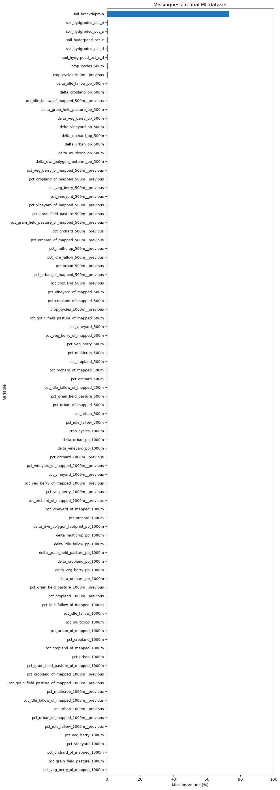

Objective: Combine groundwater nitrate measurements with soil, terrain, climate, and historical agricultural features into a single table for machine learning.
Procedure - The cleaned groundwater dataset is the starting point: 5,280 nitrate measurements from 1,993 wells sampled 2022–2025 (notebooks/data_cleaning/groundwater/gwater_clean.ipynb). - Soil (SSURGO) and terrain (10 m DEM) features are static and joined by well ID. - PRISM climate features are matched to each sample, using only complete months before the sample date. - Historical crop features (DWR crop maps, 500 m and 1,000 m buffers) are joined by well ID and the year before each nitrate measurement (lag-1; e.g., nitrate from 2023 uses the 2022 crop map). - All joins are left joins that preserve every groundwater observation, and each join is checked for duplicated or unmatched rows.
Output:notebooks/merge/groundwater_ml_integration_lag1_2021_2024_with_climate.csv (5,280 rows × 147 columns), read by src/features/preprocessing.py (load_model_data()).
Local-only inputs (not tracked by Git; place them at these paths): data/soils/soils_huc8_attributes.gpkg and data/elevation/dem_watershed_10m.tif.
Code
import sysfrom pathlib import Path# Make src importable from any notebook folder (identical in every notebook)sys.path.insert(0, str(next(p for p in [Path.cwd(), *Path.cwd().parents] if (p /"src").is_dir())))from src import pathsPROJECT_ROOT = paths.ROOTimport numpy as npimport pandas as pdimport geopandas as gpdimport rasteriofrom rasterio.mask import maskfrom shapely.geometry import mappingfrom src import pathsimport pyproj# MODEL_DATA (used by every model result) was built with PROJ's network datum grids on, unlike the# project-wide setting in src/__init__.py; turn them on so a rebuild matches (needs internet the first time)pyproj.network.set_network_enabled(True)NITRATE_PATH = paths.NITRATE_CLEANBUFFER_PATH = paths.WELL_BUFFERSSOIL_PATH = paths.SOILSDEM_PATH = paths.DEMPRISM_PATH = paths.PRISM_CLEANCROP_PATH = paths.CROP_FEATURESMETRIC_CRS ="EPSG:3310"def checked_left_merge(base, features, key, feature_name):"""Left-join features while preserving the base rows and their order."""if key notin base.columns or key notin features.columns:raiseKeyError(f"{feature_name}: missing join key {key!r}.")if features[key].duplicated().any():raiseValueError(f"{feature_name}: feature keys are not unique.") original_ids = base["observation_id"].copy() original_rows =len(base) merged = base.merge( features, on=key, how="left", validate="many_to_one", sort=False, indicator="_feature_match", )iflen(merged) != original_rows ornot merged["observation_id"].equals(original_ids):raiseAssertionError(f"{feature_name}: merge changed base rows or order.") matched =int(merged["_feature_match"].eq("both").sum()) coverage = {"feature": feature_name,"matched_rows": matched,"unmatched_rows": original_rows - matched,"missing_fraction": (original_rows - matched) / original_rows, }return merged.drop(columns="_feature_match"), coverage
1. Check the inputs
The checks stop if a required file or column is missing. That keeps an unavailable feature from being silently skipped.
Code
required_paths = [NITRATE_PATH, BUFFER_PATH, SOIL_PATH, DEM_PATH, PRISM_PATH, CROP_PATH]missing_paths = [path for path in required_paths ifnot path.exists()]if missing_paths:raiseFileNotFoundError("Missing inputs:\n"+"\n".join(map(str, missing_paths)))observations = pd.read_csv( NITRATE_PATH, dtype={"gm_well_id": "string", "src_samp_collection_time": "string"}, parse_dates=["gm_samp_collection_date"],)required = {"gm_well_id", "gm_samp_collection_date", "nitrate_mg_L", "gm_latitude", "gm_longitude"}ifnot required.issubset(observations.columns):raiseValueError(f"Missing nitrate columns: {required -set(observations.columns)}")if observations.empty:raiseValueError("The nitrate table is empty.")sample_years = observations["gm_samp_collection_date"].dt.yearifnot sample_years.between(2022, 2025).all():raiseValueError("Expected Charlsey's filtered nitrate data from 2022 through 2025.")expected_rows =len(observations)if observations[["gm_well_id", "gm_samp_collection_date"]].isna().any().any():raiseValueError("The nitrate table has a missing well ID or sample date.")observations = observations.copy()# The canonical CSV row number distinguishes repeated measurements.observations["source_csv_row"] = observations.index +2observations["observation_id"] ="GW-CSV-"+ observations["source_csv_row"].astype(str).str.zfill(5)if observations["observation_id"].duplicated().any():raiseValueError("Observation IDs must be unique.")base_ids = observations["observation_id"].copy()print("Nitrate rows:", len(observations))print("Unique wells:", observations.gm_well_id.nunique())print("Years:", observations.gm_samp_collection_date.dt.year.min(),"to", observations.gm_samp_collection_date.dt.year.max())print("Columns:", observations.columns.tolist())
Existing 500 m buffers are overlaid with SSURGO polygons. Numeric values are averaged by intersected area. Category percentages use mapped category area; coverage percentages show how much of the full buffer is mapped. An absent category is 0 when category data are mapped, while no category coverage remains missing. No minimum coverage cutoff is assumed.
Code
import shapelybuffers = gpd.read_file(BUFFER_PATH)soils = gpd.read_file(SOIL_PATH)if buffers.crs isNoneor soils.crs isNone:raiseValueError("Both buffer and soil layers need a CRS.")if buffers.empty:raiseValueError("The well buffer layer is empty.")if buffers.gm_well_id.duplicated().any():raiseValueError("Expected one existing buffer per well ID.")# Check geometries before reprojection or spatial operations. Invalid# geometries are reported rather than silently repaired.def check_geometries(frame, layer_name, id_column=None): missing = frame.geometry.isna() empty = frame.geometry.is_empty invalid =~frame.geometry.is_valid problem = missing | empty | invalidif problem.any(): examples = frame.loc[problem, id_column].head(10).tolist() if id_column else frame.index[problem].tolist()[:10]raiseValueError(f"{layer_name} has {int(problem.sum())} missing, empty, or invalid "f"geometries. Examples: {examples}" )print(f"{layer_name}: all {len(frame)} geometries are valid.")check_geometries(buffers, "Buffers", "gm_well_id")check_geometries(soils, "SSURGO soils")soil_columns = ["slopegradwta", "brockdepmin", "aws0150wta", "drclassdcd", "hydgrpdcd"]ifnotset(soil_columns).issubset(soils.columns):raiseValueError(f"Missing soil columns: {set(soil_columns) -set(soils.columns)}")category_fields = ["drclassdcd", "hydgrpdcd"]category_values = {}for name in category_fields: category_values[name] =sorted(soils[name].dropna().unique(), key=str)# Area calculations use the same metric CRS for both layers.buffers = buffers.to_crs("EPSG:3310")soils = soils.to_crs("EPSG:3310").reset_index(drop=True)numeric_fields = ["slopegradwta", "brockdepmin", "aws0150wta"]for name in numeric_fields: soils[name] = pd.to_numeric(soils[name], errors="coerce")soil_features_by_batch = []batch_size =100total_buffers =len(buffers)for batch_start inrange(0, total_buffers, batch_size): batch_end =min(batch_start + batch_size, total_buffers) batch = buffers.iloc[batch_start:batch_end][["gm_well_id", "geometry"]]# Find only soil polygons touching each buffer, then intersect all pairs# in one vectorized Shapely operation for this batch. candidates = gpd.sjoin( batch, soils[soil_columns + ["geometry"]], how="inner", predicate="intersects", )if candidates.empty: pairs = candidates.copy() pairs["_intersection_area"] = pd.Series(dtype="float64")else: soil_positions = candidates["index_right"].to_numpy(dtype=int) intersection_geometries = shapely.intersection( candidates.geometry.array, soils.geometry.array.take(soil_positions), ) intersection_areas = shapely.area(intersection_geometries) keep = np.isfinite(intersection_areas) & (intersection_areas >0) pairs = candidates.loc[keep].copy() pairs["_intersection_area"] = intersection_areas[keep] feature_batch = pd.DataFrame({"gm_well_id": batch["gm_well_id"].to_numpy()}) buffer_areas = pd.Series( batch.geometry.area.to_numpy(), index=batch["gm_well_id"].to_numpy(), ) mapped_area = pairs.groupby("gm_well_id")["_intersection_area"].sum() mapped_area_for_wells = feature_batch.gm_well_id.map(mapped_area).fillna(0.0)if (mapped_area_for_wells.to_numpy() > buffer_areas.to_numpy() *1.01).any():raiseValueError("SSURGO polygons overlap within at least one well buffer.") feature_batch["soil_mapped_coverage_pct"] = (100* mapped_area_for_wells.to_numpy() / buffer_areas.to_numpy() )for name in numeric_fields: valid_pairs = pairs.loc[ pairs[name].notna(), ["gm_well_id", name, "_intersection_area"] ] valid_area = valid_pairs.groupby("gm_well_id")["_intersection_area"].sum() weighted_sum = ( valid_pairs[name] * valid_pairs["_intersection_area"] ).groupby(valid_pairs["gm_well_id"]).sum() feature_batch[f"soil_{name}"] = ( feature_batch.gm_well_id.map(weighted_sum / valid_area).to_numpy() ) feature_batch[f"soil_{name}_coverage_pct"] = (100* feature_batch.gm_well_id.map(valid_area).fillna(0.0).to_numpy()/ buffer_areas.to_numpy() )for name in category_fields: valid_pairs = pairs.dropna(subset=[name]) valid_area = valid_pairs.groupby("gm_well_id")["_intersection_area"].sum() valid_area_for_wells = feature_batch.gm_well_id.map(valid_area) feature_batch[f"soil_{name}_coverage_pct"] = (100* valid_area_for_wells.fillna(0.0).to_numpy()/ buffer_areas.to_numpy() ) category_area = valid_pairs.groupby( ["gm_well_id", name], observed=True )["_intersection_area"].sum()for category in category_values[name]: label =str(category).strip().lower().replace(" ", "_").replace("/", "_")try: area_for_category = category_area.xs(category, level=name)exceptKeyError: area_for_category = pd.Series(dtype="float64") area_by_well = feature_batch.gm_well_id.map(area_for_category).fillna(0.0) percentage =100* area_by_well / valid_area_for_wells feature_batch[f"soil_{name}_pct_{label}"] = percentage.where( valid_area_for_wells >0 ).to_numpy() soil_features_by_batch.append(feature_batch)print(f"Processed SSURGO buffers {batch_start +1}-{batch_end} of {total_buffers}")del candidates, pairsif"intersection_geometries"inlocals():del intersection_geometriesimport gc gc.collect()soil_features = pd.concat(soil_features_by_batch, ignore_index=True)if soil_features.gm_well_id.duplicated().any():raiseValueError("SSURGO feature table is not unique by well.")print("SSURGO feature rows:", len(soil_features))print("Average mapped buffer coverage (%):", soil_features.soil_mapped_coverage_pct.mean().round(1))
Buffers: all 1993 geometries are valid.
SSURGO soils: all 15906 geometries are valid.
Processed SSURGO buffers 1-100 of 1993
Processed SSURGO buffers 101-200 of 1993
Processed SSURGO buffers 201-300 of 1993
Processed SSURGO buffers 301-400 of 1993
Processed SSURGO buffers 401-500 of 1993
Processed SSURGO buffers 501-600 of 1993
Processed SSURGO buffers 601-700 of 1993
Processed SSURGO buffers 701-800 of 1993
Processed SSURGO buffers 801-900 of 1993
Processed SSURGO buffers 901-1000 of 1993
Processed SSURGO buffers 1001-1100 of 1993
Processed SSURGO buffers 1101-1200 of 1993
Processed SSURGO buffers 1201-1300 of 1993
Processed SSURGO buffers 1301-1400 of 1993
Processed SSURGO buffers 1401-1500 of 1993
Processed SSURGO buffers 1501-1600 of 1993
Processed SSURGO buffers 1601-1700 of 1993
Processed SSURGO buffers 1701-1800 of 1993
Processed SSURGO buffers 1801-1900 of 1993
Processed SSURGO buffers 1901-1993 of 1993
SSURGO feature rows: 1993
Average mapped buffer coverage (%): 99.7
3. Terrain features
Elevation is sampled from the 10 m DEM at each well. Topographic position is the well elevation minus the mean valid elevation within the existing 500 m buffer. The DEM CRS is EPSG:4269 (pixel spacing ≈ 0.0000926°, nominally 10 m; exact ground resolution varies with latitude); buffers and distances use EPSG:3310 metres.
Distance to the nearest large river was planned but excluded: the available NHD stream-order values are all missing, so the stream order > 3 filter cannot be applied.
DEM CRS: EPSG:4269 pixel size: (9.2592592593e-05, 9.2592592593e-05) NoData: -999999.0
4. Date-safe PRISM climate features
A well is assigned to its nearest PRISM grid point in EPSG:3310. Features use only complete months before the nitrate sample month. Historical means use complete calendar years before the sample year. Inches are converted to millimetres; °F is converted to °C. Earlier nitrate samples may lack PRISM history because this source begins in 2013.
Objective: Integrate historical agricultural predictors using the crop map from the year preceding each groundwater nitrate observation.
The crop dataset contains one row per well and crop reference year. Features use consistent 500 m and 1,000 m buffers and include agricultural land use, cropping intensity, mapped-area coverage, and historical changes. Missing agricultural values remain missing rather than being replaced with zero.
Code
# Load annual crop features, preserving well IDs as text.crop = pd.read_csv(CROP_PATH, dtype={"gm_well_id": "string"})# Check the columns required for temporal matching.required_crop_columns = {"gm_well_id", "crop_year"}ifnot required_crop_columns.issubset(crop.columns):raiseValueError(f"Missing crop columns: {required_crop_columns -set(crop.columns)}" )# Make sure crop years are numeric.crop["crop_year"] = pd.to_numeric( crop["crop_year"], errors="raise").astype("Int64")# Each well must have at most one record per crop year.if crop.duplicated(["gm_well_id", "crop_year"]).any():raiseValueError("Duplicate well-year combinations in crop data.")# Identify agricultural predictors and coverage metadata.crop_columns = [ col for col in crop.columnsif col notin ["gm_well_id", "crop_year"]]print("Crop records:", len(crop))print("Unique wells:", crop["gm_well_id"].nunique())print("Available crop years:", sorted(crop["crop_year"].dropna().unique()))print("Crop feature columns:", len(crop_columns))
Static soil and terrain features join by well ID. Climate and crop features join by observation ID. Every join is left-sided and checked to preserve all original samples. Missing values are reported, not filled.
Code
integrated = observations.copy()integrated, soil_match = checked_left_merge(integrated, soil_features, "gm_well_id", "SSURGO")integrated, dem_match = checked_left_merge(integrated, dem_features, "gm_well_id", "terrain")# Match each nitrate observation to the previous year's crop map.integrated["crop_year"] = ( integrated["gm_samp_collection_date"].dt.year -1).astype("Int64")# Join crops by well ID and crop year, keeping every nitrate observation.crop_rows = integrated[ ["observation_id", "gm_well_id", "crop_year"]].merge( crop, on=["gm_well_id", "crop_year"], how="left", validate="many_to_one", sort=False, indicator="crop_source_match")# Verify that the crop join preserves all nitrate observations.if (len(crop_rows) !=len(integrated)ornot crop_rows["observation_id"].equals(integrated["observation_id"])):raiseAssertionError("Crop join changed nitrate observations.")# Keep the crop matching status and all crop features.crop_rows["crop_source_match"] = ( crop_rows["crop_source_match"].astype("string"))actual_crop_matches =int( crop_rows["crop_source_match"].eq("both").sum())integrated, crop_join_check = checked_left_merge( integrated, crop_rows[ ["observation_id", *crop_columns, "crop_source_match"] ],"observation_id","historical crop features")# Add the date-safe PRISM climate features to each nitrate observation.integrated, climate_match = checked_left_merge( integrated, climate_features,"observation_id","PRISM climate")print("Integrated shape:", integrated.shape)print("Nitrate observations matched to crops:", actual_crop_matches)display( pd.crosstab( integrated["year"], integrated["crop_source_match"], margins=True ))
Integrated shape: (5280, 147)
Nitrate observations matched to crops: 5280
/tmp/ipykernel_203188/3705046338.py:14: PerformanceWarning: DataFrame is highly fragmented. This is usually the result of calling `frame.insert` many times, which has poor performance. Consider joining all columns at once using pd.concat(axis=1) instead. To get a de-fragmented frame, use `newframe = frame.copy()`
].merge(
/tmp/ipykernel_203188/3705046338.py:14: PerformanceWarning: DataFrame is highly fragmented. This is usually the result of calling `frame.insert` many times, which has poor performance. Consider joining all columns at once using pd.concat(axis=1) instead. To get a de-fragmented frame, use `newframe = frame.copy()`
].merge(
/tmp/ipykernel_203188/496798002.py:46: PerformanceWarning: DataFrame is highly fragmented. This is usually the result of calling `frame.insert` many times, which has poor performance. Consider joining all columns at once using pd.concat(axis=1) instead. To get a de-fragmented frame, use `newframe = frame.copy()`
merged = base.merge(
/tmp/ipykernel_203188/496798002.py:46: PerformanceWarning: DataFrame is highly fragmented. This is usually the result of calling `frame.insert` many times, which has poor performance. Consider joining all columns at once using pd.concat(axis=1) instead. To get a de-fragmented frame, use `newframe = frame.copy()`
merged = base.merge(
/tmp/ipykernel_203188/496798002.py:46: PerformanceWarning: DataFrame is highly fragmented. This is usually the result of calling `frame.insert` many times, which has poor performance. Consider joining all columns at once using pd.concat(axis=1) instead. To get a de-fragmented frame, use `newframe = frame.copy()`
merged = base.merge(
/tmp/ipykernel_203188/496798002.py:46: PerformanceWarning: DataFrame is highly fragmented. This is usually the result of calling `frame.insert` many times, which has poor performance. Consider joining all columns at once using pd.concat(axis=1) instead. To get a de-fragmented frame, use `newframe = frame.copy()`
merged = base.merge(
crop_source_match
both
All
year
2022
1455
1455
2023
1298
1298
2024
1252
1252
2025
1275
1275
All
5280
5280
Code
# ------------------------------------------------------------# 6b. Final checks and save# The integrated table is only written if it does not exist yet.# If it already exists, we compare it with the table we just built# and report any differences, WITHOUT overwriting the saved file# (all model results were produced with the saved file).# ------------------------------------------------------------climate_cols = ["historical_mean_annual_precip_mm","previous_3_complete_months_precip_mm","previous_12_complete_months_precip_mm","historical_mean_temperature_c","previous_3_complete_months_temperature_c","previous_12_complete_months_temperature_c",]# Basic checks: stop if any of these is not trueassertlen(integrated) ==5280# every nitrate sample is keptassert integrated["observation_id"].is_unique # no duplicated samplesassert integrated["crop_source_match"].eq("both").all() # every sample matched a crop recordassert integrated[climate_cols].notna().all().all() # no missing climate valuesnew_path = ( paths.MODEL_DATA)if new_path.exists():# Read the saved table, with the same data types as the new one,# so that the comparison is fair saved = pd.read_csv( new_path, dtype={"gm_well_id": "string", "observation_id": "string"}, )for column in integrated.columns:if pd.api.types.is_datetime64_any_dtype(integrated[column]): saved[column] = pd.to_datetime(saved[column], errors="raise")elif pd.api.types.is_numeric_dtype(integrated[column]): saved[column] = pd.to_numeric(saved[column], errors="raise")# For every numeric column, find the largest difference between# the saved table and the new one (ignoring tiny rounding noise) numeric = [c for c in integrated.columns if pd.api.types.is_numeric_dtype(integrated[c])] diffs = (saved[numeric] - integrated[numeric]).abs().max() scale = integrated[numeric].abs().max().clip(lower=1) # compare relative to each column's size diffs = diffs[diffs >1e-9* scale].sort_values(ascending=False)if diffs.empty:print("Existing output matches; reusing without writing:", new_path)else:# Differences found: keep the saved file and show how big they areprint("Existing output kept unchanged (all model results use it).")print("Largest absolute differences vs. the current inputs:")print(diffs.head(8).round(4).to_string())else:# First run: no saved table yet, so write it integrated.to_csv(new_path, index=False)print("Saved:", new_path)print("Rows, columns:", integrated.shape)print("Climate columns:", len(climate_cols))
Share of missing values for every column that has any. Missing values are reported, not filled.
Code
import matplotlib.pyplot as pltmissing_pct = ( integrated.isna().mean() .mul(100) .sort_values(ascending=True))# Show only variables that actually have missing valuesmissing_pct = missing_pct[missing_pct >0]# Give each variable its own row: about 0.3 inch per bar, plus room for the title and axisfig, ax = plt.subplots(figsize=(10, 1.5+0.3*len(missing_pct)))missing_pct.plot(kind="barh", ax=ax, width=0.7)ax.set_xlabel("Missing values (%)")ax.set_ylabel("Variable")ax.set_title("Missingness in final ML dataset")ax.set_xlim(0, 100)ax.tick_params(axis="y", labelsize=9)ax.margins(y=0.01)plt.tight_layout()plt.show()

7. Conclusions
The integrated table has 5,280 nitrate observations from 1,993 wells and 147 columns (2022: 1,455; 2023: 1,298; 2024: 1,252; 2025: 1,275 samples).
Every observation was preserved through all joins, and all 5,280 observations matched a historical crop record (lag-1, 2021–2024 crop maps).
The six PRISM climate features have no missing values.
Missing values are rare except for depth to bedrock (soil_brockdepmin, 73% missing), which is screened out in notebooks/feature_selection.ipynb.
Distance to large rivers was not included because NHD stream-order data were unavailable.
Assumptions and limitations - The one-year crop lag is a consistent modeling assumption, not an established nitrate transport time. - The 2024 DWR crop map is provisional; it feeds the 2025 nitrate samples. - Areas outside DWR-mapped polygons are not treated as zero agriculture; their share is kept as outside_dwr_polygons_pct.